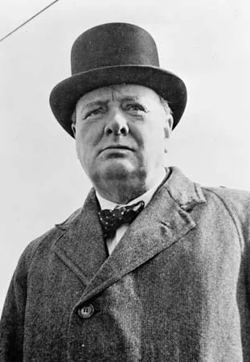

Início
O primeiro dia de setembro de 1939 é geralmente considerado o início da guerra, com a invasão alemã da Polônia; o Reino Unido e a França declararam guerra à Alemanha nazista dois dias depois. Outras datas para o início da guerra incluem o início da Segunda Guerra Sino-Japonesa, em 7 de julho de 1937. Outros seguem o historiador britânico A. J. P. Taylor, que considerava que a Guerra Sino-Japonesa e a guerra na Europa e em suas colônias ocorreram de forma simultânea e posteriormente se fundiram em 1941. Este verbete utiliza a data convencional. Outras datas por vezes utilizadas para o início da Segunda Guerra Mundial incluem a invasão italiana da Abissínia em 3 de outubro de 1935. O historiador britânico Antony Beevor vê o início da Segunda Guerra Mundial nas batalhas de Khalkhin Gol, travadas entre o Império do Japão e a União Soviética de maio a setembro de 1939. Também não existe consenso quanto à data exata do fim da guerra. Tem sido sugerido que a guerra terminou no armistício de 14 de agosto de 1945 (Dia V-J), ao invés da rendição formal do Japão em 2 de setembro de 1945; alguns apontam o fim da guerra no dia 8 de maio de 1945 (Dia V-E). No entanto, o tratado de paz com o Japão não foi assinado até 1951, enquanto que o acordo de paz com a Alemanha não foi ratificado até 1990.
Voltar ao TopoPrincipais Ataques
- Invasão da Polônia pela Alemanha (1939)
- Massacre de Babi Yar (1941)
- Cerco a Leningrado (1941-1944)
- Ataque à base naval americana Pearl Harbor (1941)
- Batalha de Stalingrado (1943)
- Invasão da Normandia (1944)
- Hiroshima e Nagasaki (1945)
Principais Nomes
Winston Churchill:
Winston Leonard Spencer-Churchill, foi um político conservador e estadista britânico, famoso principalmente por sua atuação como primeiro-ministro do Reino Unido durante a Segunda Guerra Mundial. Ele foi primeiro-ministro britânico por duas vezes.
Adolf Hitler:

Adolf Hitler, por vezes em português Adolfo Hitler, foi um político alemão que serviu como líder do Partido Nazista, Chanceler do Reich e Führer da Alemanha Nazista de 1934 até 1945. Como ditador do Reich Alemão, ele foi o principal instigador da Segunda Guerra Mundial na Europa e figura central do Holocausto
Josef Stalin:

Josef Stalin ou Estaline foi um revolucionário comunista e político soviético de origem georgiana. Governou a União Soviética de meados da década de 1920 até sua morte, servindo como Secretário Geral do Partido Comunista de 1922 a 1952, e como primeiro-ministro de seu país de 1941 a 1953.
Franklin D. Roosevelt:

Franklin Delano Roosevelt, também conhecido como FDR foi um advogado e político norte-americano que serviu como o 32º presidente dos Estados Unidos de 1933 até sua morte em 1945.
Charles de Gaulle

Charles André Joseph Marie de Gaulle foi um general, político e estadista francês que liderou as Forças Francesas Livres durante a Segunda Guerra Mundial e presidiu o Governo Provisório da República Francesa de 1944 a 1946, a fim de restabelecer a democracia na França.
Benito Mussolini:

Benito Amilcare Andrea Mussolini foi um político italiano que liderou o Partido Nacional Fascista e é creditado como sendo uma das figuras-chave na criação do fascismo.
Voltar ao TopoGaleria
Algumas imagens do nosso herois e suas sagas:


 Voltar ao Topo
Voltar ao Topo
Contato
- Telefone: 3285-9697
- Endereço: CEP: 360870-05 | Numero: 123
- E-mail: portaldainformacao@hotmail.com
- Instagram: @portaldaInformacao
Voltar ao Topo